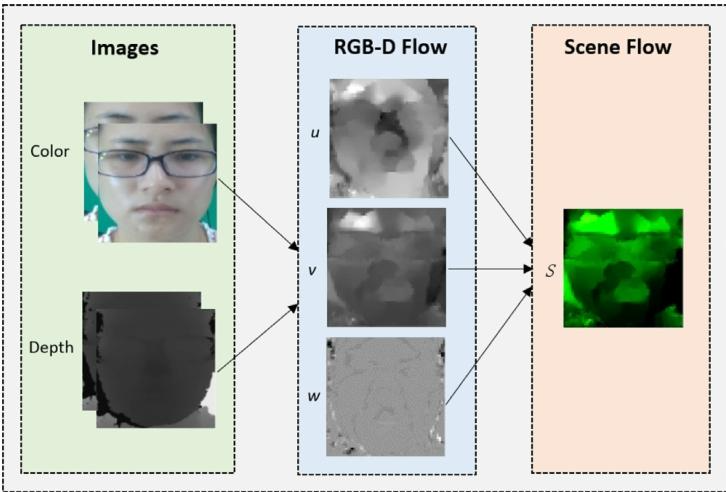
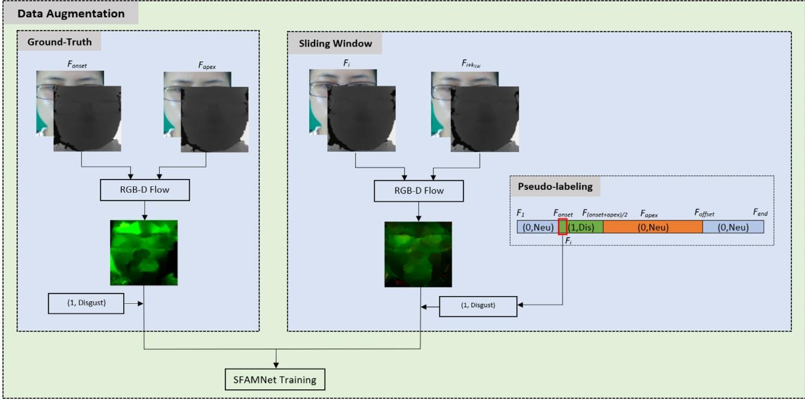
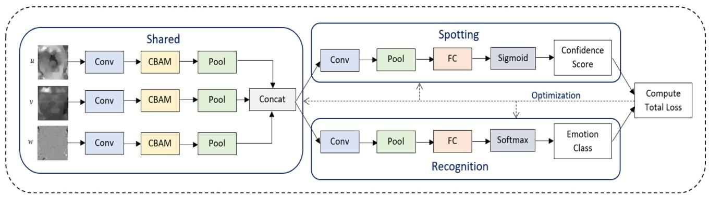
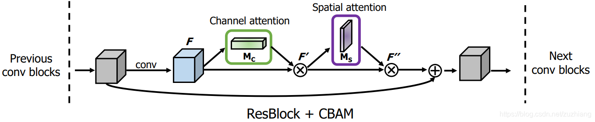
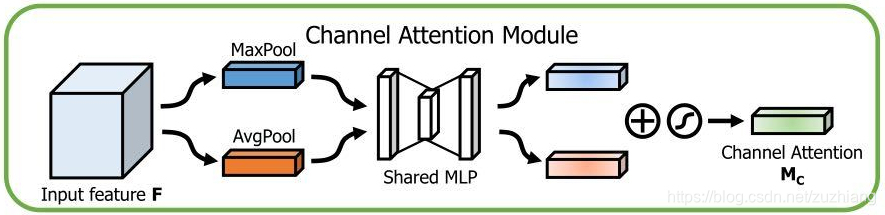
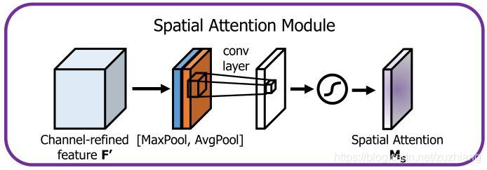
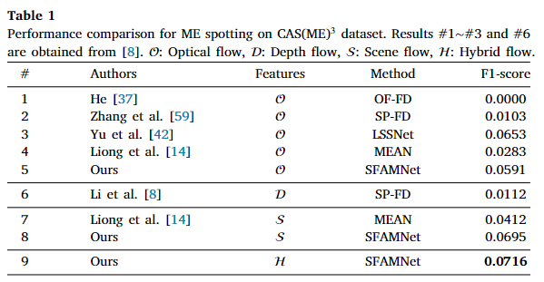
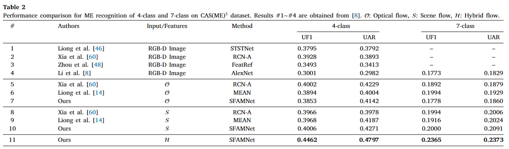
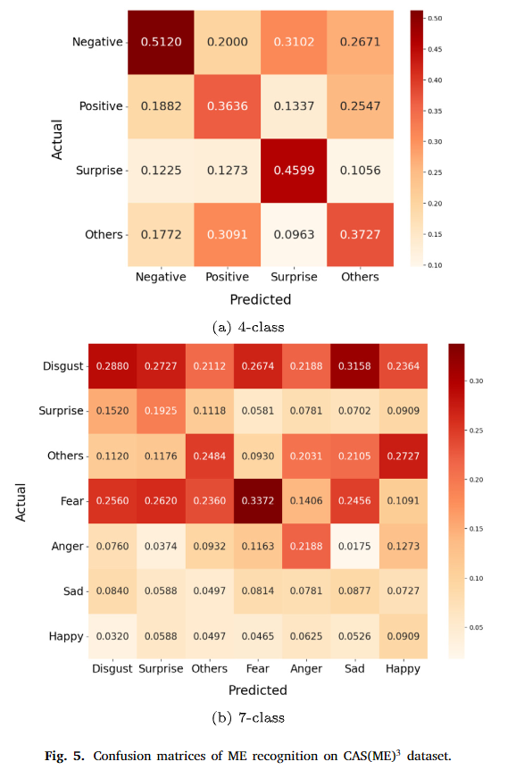
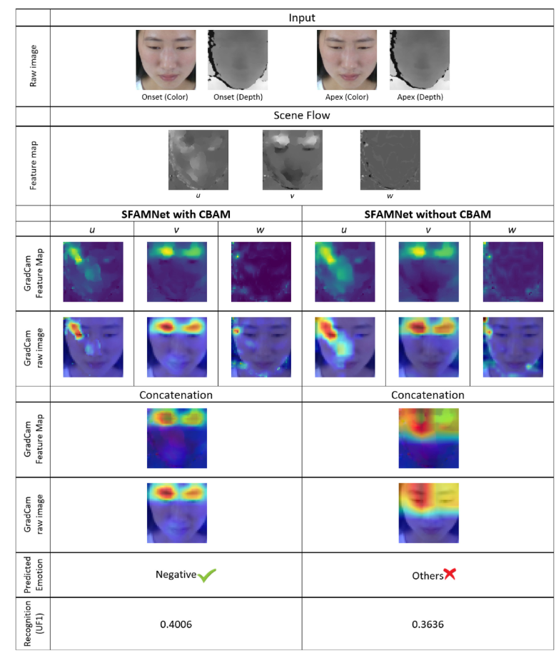

【论文阅读（二）】SFAMNet: A scene flow attention-based micro-expression network
【微表情论文阅读（二）】SFAMNet: A scene flow attention-based micro-expression network
Gen-Bing Liong, Sze-Teng Liong, Chee Seng Chan, John See
CISiP, Faculty of Computer Science and Information Technology, Universiti Malaya, Kuala Lumpur 50603, Malaysia
Neurocomputing
1. 摘要
在面部微表情（ME）的定位和识别方面已经取得了巨大进展；然而，大多数工作要么专注于二维视频上的定位任务，要么专注于识别任务。直到最近，在多模态微表情数据集发布之后，微表情的三维运动场（也称为场景流）估计才成为可能。在本文中，我们提出了首个基于场景流注意力的微表情网络，即SFAMNet。它将使用RGB - D流算法计算出的场景流作为输入，并预测定位置信分数和情绪标签。具体而言，SFAMNet是一个基于注意力的端到端多流多任务网络，旨在定位和识别微表情。除此之外，我们提出了一种数据增强策略，以缓解网络学习过程中的小样本量问题。我们在三个任务上进行了广泛的实验：（i）微表情定位；（ii）微表情识别；（iii）在多模态CAS（ME）3数据集上的微表情分析。实证结果表明，深度在捕捉微表情信息方面至关重要，也表明了所提方法的有效性。我们的源代码可在https://github.com/genbing99/SFAMNet公开获取。
2. 导论
面部表情是一种非言语交流形式，能够传达言语无法表达的人的情感。简而言之，有两种面部表情类型，即宏观表情（Macro-Expression，MaE）和微观表情（Micro-Expression，ME）。 已知在以下特征方面，分析微观表情比宏观表情更具挑战性：
- 行为方面：微观表情细微且是不自觉的，而宏观表情明显且是自愿产生的。
- 真实性方面：微观表情发生在人试图隐藏真实情感时，而宏观表情表达人的实际感受。
- 外观方面：微观表情可能只出现在脸部的一个区域，而宏观表情出现在整个脸部。
- 时间方面：微观表情通常持续时间短于0.5秒，而宏观表情持续时间在0.5到4秒之间。
在瞬间发生的微观表情中，经过微表情训练工具（Micro-Expression Training Tool，METT）专业训练的人也只有大约一半的几率能够正确识别微观表情，更不用说没有经过专业训练的人了。人们注意到，自动微观表情分析系统引起了计算机科学和心理学专家的关注，这是因为公开可用的微观表情数据集不断增加，并且在许多敏感领域（如警察审讯、临床诊断和执法）有潜在的应用。
在过去的几十年里，通过图像或视频处理在二维平面上对微观表情（MEs）进行了大量研究。然而，基于二维的分析处理三维表面上表现出的细微面部变化具有挑战性。一般来说，人们常认为，在处理表情变化、姿势变化和视点依赖性方面，三维面部分析具有更显著的优势[7]。最近，[8]开展了一项心理实验，通过向受试者展示二维和三维微观表情（ME）视频来验证深度（第三维）是一个重要因素。该实验发现，人类视觉感知系统对三维可视化更为敏感，反应时间更短且强度评级更高。因此，推测基于三维运动的微观表情分析由于采用了额外的深度信息，能够揭示二维视频未能捕捉到的视觉线索。
通常，微观表情（ME）分析包含两个主要任务：检测和识别。受2018 - 2022年微观表情大挑战（MEGC）[9 - 13]的影响，研究人员往往只专注于单个任务，要么是检测，要么是识别。因此，现有的用于检测任务的方法难以用于识别任务，反之亦然。尽管[14]提出的微观表情分析网络（MEAN）能够解决这个问题，但这种两步式网络学习模式相对耗时。因此，开发一种在微观表情检测和识别任务上都能很好运行的端到端学习方法是至关重要的。
贡献：
- 据我们所知，这是已知的首个尝试在多模态CAS(ME)3数据集上同时进行微观表情（MEs）检测和识别的工作。我们提出SFAMNet来完成这两项任务以及统一的先检测后识别分析任务。
- 从技术层面上讲，我们利用RGB - D（红绿蓝 - 深度）流特征提取技术，通过颜色和深度两种模态来估计面部的三维运动变化。此外，我们提出了一种数据增强策略，利用改进的伪标记技术增加微观表情（ME）的样本量以用于网络训练。
- 在实验方面，我们在CAS(ME)3数据集的三个任务上取得了最佳结果：微观表情（ME）检测的F1分数为0.0716，微观表情（4类）识别的无加权F1（UF1）为0.4462，微观表情（4类）分析的综合识别率（STRS）为0.0331。
3. 文献综述
传统上，对微观表情（ME）的研究始于1969年，当时埃克曼（Ekman）发现了微观表情的存在[17]。随后，2009年发布的最早的摆拍微观表情数据集[18]推动了计算机视觉算法的发展。由于摆拍的微观表情可能呈现出与现实中的微观表情不同的特征（即行为和时间方面），2013年发布了首个自发的微观表情数据集[19]。有了额外的深度信息后，直到2022年中期才发布了最先进的多模态数据集，以鼓励基于3D技术的提出[8,16]。因此，这一领域仍然被认为是非常新的，相关文献有限。因此，本节将回顾用于处理二维视频的方法。
3.1 特征提取
现有的特征提取技术可分为两大类：局部二值模式（LBP）变体和光流引导特征。LBP是微观表情领域的先驱方法之一，它对光照变化具有鲁棒性且计算相对简单[20]。此后，三正交平面上的LBP（LBPTOP）由于能够在增加时间维度的情况下测量强度，在微观表情数据集中通常被用作基线方法[16,19,21,22]。接着，提出了几种LBP变体以进一步提高其区分能力[23,24]。然而，大多数LBP变体的主要缺点是它们只考虑局部特征而不是全局特征。
同时，光流特征提取技术在微观表情领域广泛使用[11]，它具有在二维场中估计面部运动变化速度的强大能力。有一些光流计算算法，包括Horn & Schunck算法[25]、Lucas Kanade算法[26]、Farneback算法[27]和TV-L1算法[28]。然后，从光流中导出光应变以捕获面部变形信息[29]。在文献中，一些光流引导特征被设计出来以提高鲁棒性[30 - 33]。值得注意的是，在当前文献中使用光流引导特征有上升趋势。
3.2 微表情定位
一般来说，微观表情检测是在特征提取阶段之后进行的，以定位微观表情出现的时间间隔。在[20]的工作中，他们提出了特征差异（FD）分析，计算两帧之间局部二值模式（LBP）特征的卡方（）距离，以获得面部变化的程度。之后，应用阈值处理和峰值检测来定位变化程度高的相关运动[34,35]。此外，[36]分析了微观表情的运动模式，并采用哈默斯坦模型来增加用于训练的特征样本，从而提高了机器学习算法的性能。一些传统方法也分析光流强度，这在微观表情大挑战（MEGC）检测任务中很流行[37 - 39]，但这些方法容易受到较大的全局运动的影响[8]。
与直接使用特征进行检测任务不同，基于深度学习的方法正流行起来，以进一步学习对微观表情出现有贡献的显著区域。循环神经网络（RNN）被用于顺序地学习特征[40]。或者，一些工作通过设计创新的卷积神经网络（CNN）架构在帧级别上制定学习任务[35,41 - 44]。有趣的是，这些基于CNN的模型将光流引导特征作为输入图像，这再次证明了运动特征的有效性。
3.3 微表情识别
微观表情识别任务无疑是一个分类问题。在早期的工作中，支持向量机（SVM）分类器经常被用于分析来自各种特征的模式以进行比较[30]。随着文献中微观表情样本的增加，深度学习算法正受到关注，用于学习情感的视觉表示。
2019年微观表情大挑战（MEGC 2019）[10]建立了一个标准评估来衡量微观表情识别任务的性能。在这次挑战中，排名前三的被接受的提交方案[45 - 47]将光流特征作为输入数据输入到卷积神经网络（CNN）架构中。然后，提出了特征细化（FeatRef）[48]以进一步学习特定于表情的运动特征信息。身份感知和胶囊增强生成对抗网络（ICE-GAN）[49]引入了微观表情合成来增加样本，同时显著优于现有工作。然而，该工作中使用的损失函数在代码库中没有完全公开，不利于重现性。
3.4 微表情分析
尽管文献中提出了许多用于进行微观表情检测和识别的工作，但无缝地进行微观表情先检测后识别的微观表情分析任务仍然不突出。这主要是因为检测任务的结果仍然远不能令人满意[13]。[31,50]之前的研究提出了用于检测和识别任务的完全不同的流程，这需要额外的努力来实施。因此，设计了微观表情分析网络（MEAN）[14]来在单个网络中处理这两项任务。MEAN是一个多输出网络，具有用于检测和识别的两个特定任务网络。该网络的不完善之处在于两步学习范式，这可能在训练时很耗时。为了克服这个问题，本文提出了一种端到端的学习方法。
4. 提出的方法
4.1 场景流
场景流估计一对彩色（RGB）和深度（D）帧之间的三维运动场。它已在多个应用中被广泛使用，例如自动驾驶、机器人技术、对象分割等等[52]。尽管它能够描述现实世界中的运动，但它尚未在微观表情领域得到应用。在本文中，我们实现了 RGB - D 流[51]，以使用两个 RGB - D 图像揭示三维面部运动的线索，如图 1 所示。

给定、为强度图像，、为深度图像，它们具有相似的高度和宽度，分别在时间、拍摄。根据光流所隐含的亮度恒定性质，在时间和之间移动点不发生移动，我们可以制定亮度恒定项：
，其中是像素坐标，是流场的水平和垂直分量。形式上，假设移动点的深度随时间不是恒定的，但深度变化必须等于用光流扭曲后的和之间的差值。因此，深度恒定项可以定义为：
，其中指的是流的深度分量。 在实践中，孔径问题与场景流估计相关。为了解决这个问题，需要进行正则化以提供平滑的流场。基于总变分的正则化项可以制定为：
，其中，是彩色相机的焦距。此外，流幅度惩罚项定义为：
。 为了完成场景流估计，目标是最小化能量函数：
，其中和是可以调整的常数权重。 最后，采用逐次超松弛（SOR）更新的欧拉-拉格朗日方程来解决能量最小化问题，遵循[51]工作中提出的优化过程。因此，场景流可以表示为。值得一提的是，场景流比[8]工作中引入的深度流消耗的内存显著更少。
4.2 数据增强

在微观表情领域，训练数据不足是一个长期存在的问题[8,53]。因此，我们提出了一种数据增强策略，利用滑动窗口方法从现有数据中生成新的训练数据。如图2所示，通过真实标注和滑动窗口方法计算得到的训练数据和标签被结合起来，以促进网络训练过程。
给定一个多模态微观表情数据集，其中每个记录的帧都包含RGB和深度（D）信息。通常，为每个微观表情片段提供帧位置（例如，起始帧、峰值帧和偏移帧）和情感类别（例如，高兴、厌恶……其他）标签。对于真实标注数据，使用RGB - D流来计算每对（，）的场景流。然后，我们可以生成真实标注标签集，即：，其中，是检测置信度得分，是第个片段的情感类别，而是数据集中微观表情片段的总数。请注意，对于真实标注标签，始终设置为1。
对于滑动窗口方法，窗口以的间隔在每个视频上扫描以计算场景流，其中是基于视频帧率（FPS）计算的帧距离，即：。0.2秒是起始阶段（从起始到峰值）的上限持续时间[54]。为了给用于训练的场景流标注标签，我们回顾并改进了[35]工作中提出的伪标注技术。具体来说，我们以与视频长度相似的长度初始化伪标注集为。直观地，我们发现区间中产生的动作单元（AUs），它捕获了表情的初始激活，往往为评估提供最有价值的见解。因此，我们将每个微观表情片段区间内的帧标注为。为了确保伪标注过程保持在视频长度范围内，我们仅考虑窗口的第一帧进行标注。因此，伪标注集可以表示为：，其中（7），是视频的最后一帧，并且对数据集中的所有视频重复该过程。
最后，通过连接真实标注标签集和伪标注集可以获得网络输入的训练标签：
由于一些现有工作[35,55]仅将滑动窗口方法应用于微观表情检测任务，理论上，我们提出的方法结合了来自真实标注标签的实际微观表情样本，可以更准确地描述运动细节。同样，大多数工作仅使用真实标注标签来计算微观表情识别任务的特征。作为一个附带好处，我们实施的滑动窗口方法在与真实标注运动场相同的方向上增加了具有不同幅度的微观表情样本。
4.3 SFAMNet
我们提出的基于场景流注意力的微观表情网络，即 SFAMNet，是一个基于注意力的端到端多流多任务网络，如图 3 所示。具体来说，该网络的三个输入是场景流分量（、、），两个输出是用于检测的置信度得分和用于识别的情感类别。尽管 SFAMNet 的架构基于 MEAN [14]，但有几个重要的改进使其与前身有所不同：
- 网络流的输入是场景流分量（、、），它们以额外的深度维度描述运动信息。
- 卷积块注意力模块（CBAM）结构无缝集成到网络架构中，以更多地关注对微观表情有贡献的显著区域。
- 为了消除繁琐的两步训练范式，提出了一种端到端的网络优化方法来简化训练过程。
- 三流卷积层的滤波器数量被标准化为三个。
- 在检测网络中，线性激活函数被替换为sigmoid激活函数。

给定输入的每个流中第帧的三个场景流分量，我们提出的SFAMNet模型预测置信度得分和情感类别，其可表示为：，其中，是视频中的最后一帧。
SFAMNet架构中有三个主要模块：（1）共享网络，它与卷积块注意力模块（CBAM）集成，用于从每个场景流分量中提取特征；（2）检测网络，它输出检测任务的置信度得分；（3）识别网络，它预测识别任务的情感类别。
4.3.1 卷积块注意力模块（CBAM）
卷积块注意力模块（CBAM）由于能够利用注意力机制强调有意义的特征而流行起来。更重要的是，CBAM可以被集成到任何卷积神经网络（CNN）架构中，并且可进行端到端的训练。有两个模块按顺序排列，即通道注意力模块和空间注意力模块。接下来将讨论细节。
深度学习中的注意力机制是模仿人类的注意力产生的，当我们在看一副图像时，图像中有些地方（比如人物照中的人的面部）会引起我们的注意力，而其他地方则可能会忽视。这相当于给整幅图像加了一个可视化的权重。注意力机制可以分为通道注意力和空间注意力等。简单来说，注意力机制就是给每个通道或整个空间特征图乘以一个权重，以表示它们的重要性。

通道注意力模块先对输入特征图在空间维度分别进行最大池化和平均池化，然后分别经过一个共享权重的MLP（多层感知机） ，然后将两者的输出做逐元素的相加，再经过sigmoid激活函数，得到通道注意力权重，将该权重和输入特征图做逐元素的乘法，就实现了通道上的注意力机制。
在空间维度分别进行最大池化和平均池化，其实就是只保留通道的维度，其他维度为1，得到一个一维的矢量，然后再经过共享权重的MLP，MLP由两层卷积操作组成，第一个卷积后使用ReLU激活函数，第二个卷积后使用sigmoid激活函数得到输出权重，然后将每个通道乘以其对应的权重。

先对输入特征图做基于通道的最大池化和平均池化操作，将得到的两个特征图做基于通道的拼接，再对其进行卷积操作和sigmoid激活函数，得到通道数为1，特征图大小和输入相同的注意力权重，再与输入特征图做逐元素的乘法，就完成了空间注意力机制。

通道注意力模块通过计算通道维度的注意力来聚焦图像中“什么”是重要的。首先，同时应用全局最大池化（MaxPool）和全局平均池化（AvgPool）来压缩输入特征图。具体来说，平均池化聚合空间信息，而最大池化保留特征图中的上下文信息。接下来，得到的特征图和被送入具有一个隐藏层的共享多层感知机（MLP），该层中的权重表示为和。然后，将这些特征按元素相加，并通过一个 S 型函数（）以获得输出通道注意力图。总体而言，通道注意力模块可以总结如下：
为了传播计算出的注意力值，将与输入特征按元素相乘以形成，即
另一方面，空间注意力模块聚焦于“哪里”是重要区域，作为对通道注意力的补充。从通道注意力模块的输出中获取中间特征图，应用全局平均池化和全局最大池化以获得二维特征图：和。在连接这些二维特征图后，应用一个具有核大小的卷积层（）和一个 S 型函数（）以生成空间注意力图。这个过程可以写成：
最后，将与按元素相乘得到精细的输出：
形式上，给定特征图作为输入，卷积块注意力模块（CBAM）生成和作为注意力图，然后作为最终输出。注意，、和分别表示特征图的通道数、高度和宽度。
4.3.2 共享网络
一个共享网络由三个输入流组成，每个输入流接收一个场景流分量。首先，卷积层应用卷积滤波器来计算特征图，使得第层中位置处特征图中的每个像素通过以下方式计算：
其中是第层中位置处的核权重参数，和分别是第层中核的宽度和高度，是第层中的偏置。随后，集成卷积块注意力模块（CBAM）层以在通道和空间维度上提取有意义的特征。由于输入和输出特征图的大小相同，为了简单起见，我们表示为：
接下来，我们使用最大池化层来计算特征图中每个小块的最大值，可以表示为：
其中指的是小块的大小。最后，使用拼接层（）合并三个流的输出，以表示从输入场景流中提取的特征。简而言之，共享网络可以表示为：
其中是拼接层之前的中间特征图，是共享网络的输出。
4.3.3 检测(spot)网络
spotting network 是专门为微表情定位任务设计的特定任务网络。在共享网络之后，先应用一个卷积层，接着是一个最大池化层作用于特征图，目的是提取对定位任务重要的特定特征。之后，将特征图展平为一维向量，然后传递到具有只有一个神经元的 sigmoid 激活函数的全连接层（）。sigmoid 激活函数的计算公式为
。这个激活函数的输出在 0 和 1 之间，可以解释为处于表情区间的概率。
输出是介于 0 和 1 之间的预测定位置信度得分，它可以被解释为处于表情区间的概率。定位网络如下：
，其中是从共享网络的输出中得到的预测定位置信度得分。
4.3.4 识别(recognition)网络
识别网络将共享网络之后的特征图作为输入，并预测情绪类别的概率。在全连接层之前，它与定位网络具有相似的结构。相比之下，提取的特征特定于识别任务。添加一个 softmax 激活函数（），即：
，其中是特征图属于类别的概率，是情绪类别的总数。识别网络的输出是预测的情绪类别。该网络的结构如下：
，其中是来自共享网络输出的每个情绪类别的预测概率。
4.3.5 预测与后处理
在对长视频进行预测时，将提取了光流特征的每一帧输入网络，以获得预测的定位置信度得分和情绪标签的概率。然后，我们选择概率最大的情绪标签作为预测的情绪类别。
在微表情定位任务的后处理过程中，我们采用了[57]中的策略。值得注意的是，该策略可以同时获得最大强度区间（MaE）和微表情区间（ME）以进行评估。简而言之，主要有五个步骤：（i）获取整个视频中每一帧的预测置信度得分；（ii）使用长度为和的两个滑动窗口，并应用简单的平均平滑函数以获得两条平滑曲线；（iii）使用阈值为 P 的峰值检测技术来检测 ME 和 MaE 曲线中的峰值帧；（iv）计算检测到的 ME 峰值帧与其在 MaE 曲线中的相邻帧之间的差值，如果差值大于阈值，则保留 ME 峰值帧。这个过程旨在减少上一步中大量错误检测到的 ME；（v）根据、、和的长度来确定 MaE 和 ME 的区间。
在分析任务的后处理过程中，我们采用了众数技术[14]来确定定位区间的情绪类别。简而言之，选择在定位到的起始阶段（定位区间内？）中出现次数最多的预测情绪类别。因此，这种众数技术减少了来自整个定位区间的偏差（仅使用单个帧）和噪声（使用过多帧）。
5. 实验
5.1 数据集
我们选择多模态 CAS(ME)3 数据集[8]来评估我们提出的方法的性能。CAS(ME)3 是第一个引入深度信息来描述表情期间面部深度变化的微表情数据集。使用具有 30 FPS 和 1280×720 分辨率的英特尔 RealSense D415 相机来记录 RGB-D 图像。该数据集分为三个部分：A 部分、B 部分和 C 部分。男女比例为 112:135，平均年龄为 22.74。A 部分和 B 部分是使用第二代诱发范式记录的，而 C 部分是基于第三代微表情诱发范式记录的。由于 B 部分的视频没有标注，并且 C 部分的视频是在不同的设置下诱发的，因此我们使用 A 部分进行实验。
A 部分采用第二代记录方式，在受约束的实验室环境中录制。为了捕捉自然发生的微表情，要求受试者在整个过程中保持面无表情。从100名受试者那里收集了1300个视频片段，平均视频时长约为98秒。总共有860个微表情和3342个宏表情被标注了起始帧、峰值帧和结束帧的位置。仅为微表情提供了情绪和动作单元标签。情绪可以分为4类（457个消极、55个积极、187个惊讶和161个其他）或7类（250个厌恶、187个惊讶、161个其他、86个恐惧、64个愤怒、57个悲伤和55个高兴）。
5.2 性能指标
为了评估我们提出的方法的性能，我们遵循[14]中的指标来评估长视频在定位、识别和分析任务上的表现。
对于定位任务，我们采用微表情领域所建议的F1分数指标[11 - 13]。对于识别和分析任务，我们采用标准的评估指标，如召回率、精确率、F1分数、UF1和UAR[10]。请注意，识别任务基于真实区间，而分析任务依赖于定位到的真正例（TP）区间。我们使用“先定位后识别得分”（STRS）来衡量整个系统的性能，它是定位任务和分析任务的F1分数的乘积[14]。
5.3 实验设置
在计算光流之前，我们使用多任务级联卷积网络（MTCNN）[58]裁剪面部区域。此外，通过减去鼻子区域的光流来应用全局运动去除[35]。然后，将三个光流分量调整为像素大小，再输入到所提出的网络中。对于定位任务期间的智能分析，我们按照目标数据集的作者的建议[8]，排除了一些具有较长结束阶段（从峰值到结束）的微表情。
我们的网络使用 Adam 优化器进行训练，批处理大小设置为 1024。我们采用的学习率，并执行 200 个周期。为了缓解类别不平衡问题，我们以 1:1 的比例对有表情和无表情的帧进行采样。此外，我们根据情绪类别样本的数量来平衡类别权重，以规范公式（23）中的识别损失。通过给少数类赋予更大的权重，给多数类赋予较小的权重，迫使网络对所有类别平等地学习表示。为了确保预测的情绪类别有效，我们将“中性”类别的类别权重设置为 0。我们首先在四分类评估上训练网络。随后，我们冻结共享网络和定位网络，并在七分类评估上对其进行微调。
采用“留一法”（Leave-One-Subject-Out，LOSO）交叉验证来评估所提出的方法。这通过确保模型对测试对象没有先验知识来消除主体偏差。对于参数设置，我们设置、、、、、、将、、分别设置为6、15、20、15、32、50、50、0.58和0.02。在网络优化过程中的平衡参数设置为0.9。
所有实验均在 NVIDIA GeForce RTX 3090 上使用 PyTorch 进行。我们提出的 SFAMNet 是一个浅层架构，具有 7237 个参数和 280 万次浮点运算。在 CAS(ME)3 数据集上进行一次“留一法”交叉验证的平均时间约为 52.83 秒。
6. 结果与讨论
本节全面讨论了（i）微表情定位、（ii）微表情识别和（iii）微表情分析的结果。除了我们提出的具有场景流特征的 SFAMNet 之外，我们还进行了另外两个实验：具有光流特征的 SFAMNet 和具有混合流特征的 SFAMNet。混合流特征是通过将光流的和分量与光流的分量相结合而获得的。混合流特征背后的直觉是利用光流和场景流提供的互补信息；这在第 5.4 节（流分量）中有更详细的解释。
6.1 微表情定位
微表情定位的结果如表1所示。我们提出的具有混合流特征的方法（#9）优于其他方法（#1~#8），实现了0.0716的F1分数。比较具有光流特征的方法（#5）和具有场景流特征的方法（#8），可以观察到场景流表现更好，因为它结合了额外的深度模态来捕捉三维空间中的面部微运动。因此，我们证明了在运动场中从二维扩展到三维对于描述微表情在各个方向（即水平、垂直和深度）的细微运动是很重要的。

值得一提的是，OF-FD[37]（#1）是2021年微表情大赛（MEGC）定位任务的第一名方法，但可以看出没有检测到真正例（TP）。此外，还报告了2020年微表情大赛定位任务的第一名方法SP-FD[59]（#2）。CAS(ME)2数据集[8]的作者（#6）没有使用光流特征，而是用深度流特征重新实现了SP-FD方法。然而，这两种结果都不尽如人意。总体而言，传统的FD方法泛化能力较弱，需要明确的参数设置。相反，深度学习方法（#3~#5和#7~#9）表现得非常好。这可以归因于大样本量有助于网络更好地学习微表情出现的特征。虽然2021年微表情大赛的第二名获胜者ISSNet[42]（#3）在使用光流特征作为输入时在微表情定位任务上比我们的SFAMNet（#5）表现略好，但SFAMNet仍然表现出强大的性能，并且具有执行多任务（即定位和识别）的额外能力。有趣的是，我们发现无论是使用光流还是场景流特征作为输入，我们的SFAMNet（#5和#8）都明显优于MEAN[14]（#4和#7）。这突出了我们的方法在网络架构改进后的稳健性。
6.2 微表情识别

我们比较了基准结果、我们提出的方法以及我们针对微表情识别任务的额外实验的性能，如表2所示。我们提出的具有混合流特征的方法（#11）在四分类评估中通过获得0.4462的UF1和0.4797的UAR超越了所有其他方法（#1-#10）；此外，在七分类评估中通过实现0.2365的UF1和0.2373的UAR，与具有不同特征的基线方法、重新实现的方法和提出的方法（#4-#10）相比显示出相当大的改进。特别地，实验结果表明，使用运动信息而非RGB-D图像作为网络输入可以提高识别性能。为了强调场景流特征在我们的方法（#10）中的重要性，我们使用RCN-A[60]（#8）进行了一项实验，RCN-A是一种以RGB-D图像作为输入实现最佳识别性能的方法。结果表明，与光流相比，场景流能够通过使网络利用额外的面部深度信息来区分情绪，从而更好地表示微表情信息。

为了从我们提出的方法（#10）的预测中了解每个情绪类别的难度，我们在图5中提供了四分类和七分类的混淆矩阵。根据四分类分析，在消极和惊讶情绪上的性能略高，分别为0.5120和0.4599。这是因为消极情绪（457个样本）和惊讶情绪（187个样本）的样本量比积极情绪（55个样本）和其他情绪（160个样本）更大。在七分类分析中出现了相同的情况，多数类如厌恶（250个样本）、惊讶（187个样本）、其他（160个样本）、恐惧（86个样本）和愤怒（64个样本）胜过少数类如悲伤（57个样本）和高兴（55个样本）。因此，为了提高泛化能力并减少基于不平衡数据集的预测偏差，有必要收集更多的微表情样本用于网络训练。
6.3 消融试验
注意力机制：为了更深入地研究注意力机制，我们应用梯度加权类激活映射（GradCam）来可视化带有和不带有 CBAM（卷积块注意力模块）的 SFAMNet 的激活区域。如图 7 所示，为拼接层之前和之后的层生成了粗略的定位热图。此外，将热图叠加在特征图和原始图像上以可视化激活区域。颜色从红色到蓝色变化，其中红色表示高激活度，蓝色表示低激活度。

 wechat
wechat alipay
alipay